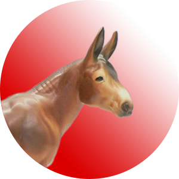

This is my school mascot:
 Go Mules! The image appears at its original size as an inline element. This is also a link!
Go Mules! The image appears at its original size as an inline element. This is also a link!
If we specify a size we can resize the image: so that it is small enough to fit where we want it. (Normally this image is 300 pixels square)
We use an alternate attribute if ther is a problem with the image or for screenreaders used by vision-impaired visitors.
Here is the missing image:

Images should be hosted in an organized folder and stored on a server with the html files and must maintain the same relative place with each other.
A JPEG is best for photographic images and provides a compressed format that gives a small file size when faced with lots of color pixel variations.
A GIF is best for limited colors. Allows for threshold transparency and animation.
A PNG does well with limited color and photographic content. It allows for gradient and subtle transparency.
